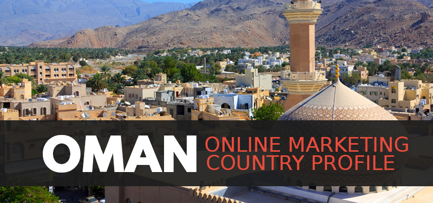

Oman provides exciting opportunities for start-up and low-budget companies to quickly and easily gain a foothold in the online market, in addition to already well-established organizations. With a rapidly growing and modernizing population, 78.5% of which regularly uses the Internet and searches on Google, Oman gives savvy marketers the potential of rapid profit and growth. This marketing profile will outline the context of the Omani market, analyses of ecommerce, SEO, PPC advertising, and social media in Oman, and the ways in which Oman can benefit and challenge digital marketers.